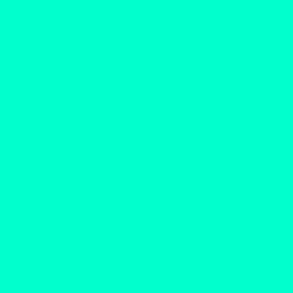

U proseku, ljudsko oko može da razlikuje oko 1 milion različitih nijansi
Kompjuter može preko 16.7 miliona
| ZAPIS NEKIH BOJA U RAZLIČITIM MODELIMA | ||||
|---|---|---|---|---|
| BOJA | RGB | CMYK | HSL | HSB/HSV |
| CRVENA | #FF0000 | cmyk(0, 1, 1, 0) | 0°, 100%, 50% | 0°, 100%, 100% |
| ZELENA | #00FF00 | cmyk(1, 0, 1, 0) | 120°, 100%, 50% | 120°, 100%, 100% |
| PLAVA | #0000FF | cmyk(1, 1, 0, 0) | 240°, 100%, 50% | 240°, 100%, 100% |
| CIJAN | #00FFFF | cmyk(0, 1, 0, 0) | 300°, 100%, 50% | 300°, 100%, 100% |
| MAGENTA | #FF00FF | cmyk(0, 0, 1, 0) | 60°, 100%, 50% | 60°, 100%, 100% |
| ŽUTA | #FFFF00 | cmyk(1, 0, 0, 0) | 180°, 100%, 50% | 180°, 100%, 100% |
| BELA | #FFFFFF | cmyk(0, 0, 0, 0) | 0°, 0%, 100% | 0°, 0%, 100% |
| CRNA | #000000 | cmyk(0, 0, 0, 1) | 0°, 0%, 0% | 0°, 0%, 0% |

Nova boja otkrivena je 18. Aprila 2025. godine. Zove se Olo, i naučnici tvrde da je najsličnija boji s heksadecimalnim kodom #00FFCC u sRGB sistemu. Kako se nalazi izvan vidljivog opsega ljudskog oka, dobijena je stimulacijom isključivo srednjetalasnih (M) čepića, pretežno osetljivih na zelenu svetlost, na očnoj mrežnjači, uz pomoć lasera.